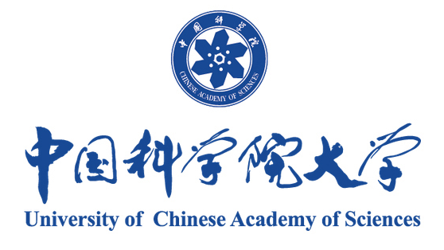
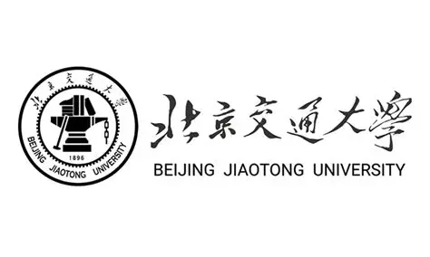
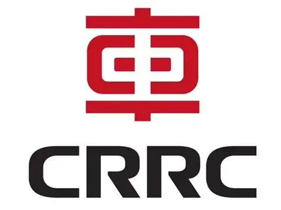

University of Chinese Academy of Sciences
M.Eng. in Control Engineering.
Graduate research at Shenzhen Institutes of Advanced Technology, Chinese Academy of Sciences.
M.Eng. Student in Control Engineering University of Chinese Academy of Sciences Shenzhen Institutes of Advanced Technology, CAS
Hi! I am Zhao Du, a master's student in Control Engineering at the University of Chinese Academy of Sciences, conducting research at the Shenzhen Institutes of Advanced Technology, Chinese Academy of Sciences. My research focuses on Human-Centered Embodied AI Infrastructure, including Multimodal Sensing, Data-Centric Robot Learning, and Real-World Robotic Evaluation for healthcare, rehabilitation, and assistive robotics.
My long-term goal is to build reliable embodied AI systems that can understand human physical states, interact safely with users, and provide meaningful assistance in real-world environments.I know it will be very difficult , but I believe that where there is a will, there is a way. I am also looking for a PhD opportunity for admission in 2027, hoping to join a team with common goals.
I have a hybrid background in control engineering, industrial system design, large-scale AI data processing, and biomedical robotic sensing.
Before entering graduate research, I worked on rail-transit equipment design and manufacturing, where I gained practical experience in system integration, technology selection, overall system design, and RAMS-oriented engineering principles, including reliability, availability, maintainability, and safety. This experience shaped my system-level engineering mindset: I care not only about whether a model performs well in experiments, but also about whether the entire system can be safely integrated, reliably deployed, and continuously operated in real-world scenarios.
I also interned in the autonomous-driving large-model department at NIO, where I worked on large-scale data processing. This experience gave me practical exposure to industrial AI data pipelines, data quality control, dataset construction, and the engineering infrastructure required to support large-scale model development.
After completing my first-year centralized coursework in Beijing, I joined SIAT in Shenzhen for full-time laboratory research in late 2025. Since then, I have focused on multimodal sensing, deep learning, biomedical ultrasound, physiological signal-based robotic control, and wearable/assistive robotic systems.

M.Eng. in Control Engineering.
Graduate research at Shenzhen Institutes of Advanced Technology, Chinese Academy of Sciences.

B.Eng. in Rail Transit Signal and Control.
Coursework in control systems, signal processing, embedded systems, sensors, algorithms, and automation.
Intern, Large-Scale Data Processing.
Worked on industrial AI data pipelines, data quality control, dataset construction, and large-model data processing.

Engineering Trainee / System Integration Design.
Worked on system integration, technology selection, overall system design, and RAMS-oriented engineering principles.
This work develops a low-cost 3D-printed exoskeleton glove for hand motion sensing and gesture recognition. Its main idea is to combine affordable hardware with a graph neural network that uses the hand's physical structure as a modeling prior.
The practical value is accessibility: the system targets gesture interfaces and rehabilitation assessment scenarios where commercial data gloves are too expensive or difficult to deploy.
This study combines surface electromyography and A-mode ultrasound for hand gesture recognition and robotic control. The key focus is cross-subject robustness: improving performance for held-out target users without labeled target-user gesture calibration.
The application scenarios include prosthetic hand control, assistive robot teleoperation, and rehabilitation robotic interfaces, where a system should remain usable when moving from one user to another and should be validated with real hardware rather than only offline classification.
This graduation design explored a wearable posture-correction prototype for shoulder-back alignment and lower-back fitting. The device uses two independently actuated degrees of freedom, combined with IMU and pressure-sensor feedback, to adaptively correct uneven shoulders, rounded shoulders, and kyphotic posture.
This project has not yet been developed into a paper. Its intended application is wearable rehabilitation assistance and daily posture intervention, especially for users who need active and adjustable posture support rather than passive reminders.
This project reflects my personal interest in camera-based physiological sensing. I reproduced the core idea of a published remote photoplethysmography-style method, using subtle facial color variations to estimate resting heart rate from video.
It is currently an exploratory reproduction demo rather than my own manuscript. The potential application is unobtrusive daily health monitoring, where physiological state can be estimated without contact sensors.